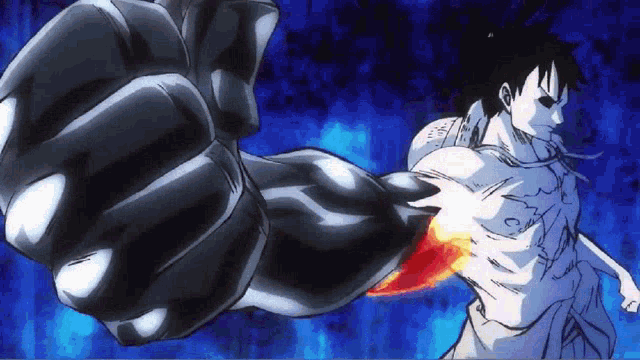
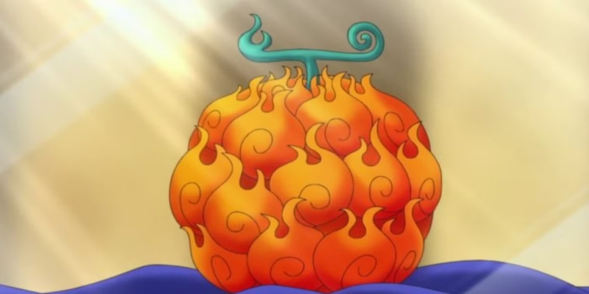

One Piece Erő rendszere
1. Haki
A Haki egy misztikus erő a One Piece világában, amely lehetővé teszi a felhasználóknak, hogy érzékeljék ellenfeleik jelenlétét, akaraterejükkel megfélemlítsék másokat vagy akár fizikai támadásokat erősítsenek fel.
- Kenbunshoku Haki (Observation Haki) – Jövőbelátás és ellenfelek érzékelése.
- Busoshoku Haki (Armament Haki) – Támadások erősítése és a Logia felhasználók elleni harc.
- Haoshoku Haki (Conqueror’s Haki) – A gyengébb ellenfelek akaratának megtörése.
2. Devil Fruits
A devil fruit-ok különleges erőkkel ruházzák fel fogyasztóikat, cserébe viszont elvesztik az úszás képességét. Három fő kategóriába sorolhatók:
- Paramecia – Különleges képességek.
- Logia – Természetes elemek irányítása és megtestesítése.
- Zoan – Állati formákba való átalakulás.
3. Awakening

Néhány tapasztalt harcos képes "felébreszteni" a devil fruit teljes erejét, amellyel hatalmas pusztítást képesek véghezvinni.
Pl: Luffy Devil Fruit Awakening – A Gear 5 ereje
Luffy Devil Fruit-jának, a Gomu Gomu no Mi-nak az ébredése az egyik legnagyobb fordulópont a One Piece történetében. Az ébredés során kiderül, hogy gyümölcse valójában nem a Paramecia típusú Gomu Gomu no Mi, hanem egy legendás, Mythical Zoan típusú gyümölcs: a Hito Hito no Mi, Model: Nika.
Mit jelent Luffy ébredése?
A Zoan típusú gyümölcsök ébredése általában növeli a felhasználó fizikai erejét és regenerációs képességeit, de Luffy esetében ennél sokkal többről van szó. Az ébredése aktiválja a Gear 5-öt, amely lehetővé teszi számára, hogy szinte korlátlanul manipulálja a saját és a környezete fizikai tulajdonságait. Ennek hatására úgy harcol, mintha egy rajzfilmfigura lenne, képes hatalmas méretűvé válni, vagy akár a földet és ellenfeleit is gumiszerűvé változtatni.